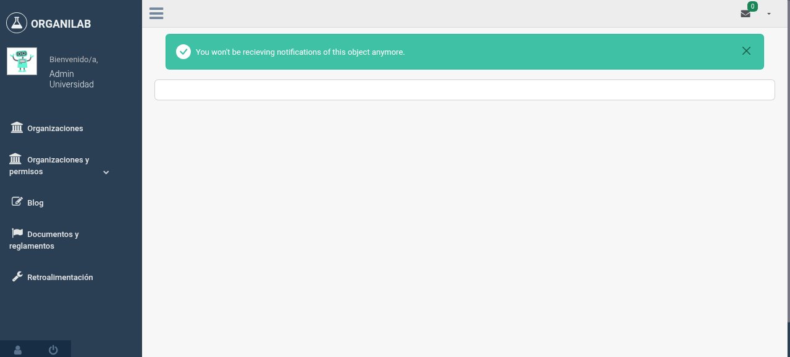

2. Notificaciones
Organilab envía notificaciones automáticas por correo electrónico para informar a los usuarios sobre situaciones importantes en sus laboratorios. Estas alertas cubren niveles bajos de inventario, productos próximos a vencer y otras notificaciones acumuladas durante el día.
Alerta de Límite de Inventario (06:50)
Cada día a las 06:50, el sistema revisa todos los laboratorios para verificar si alguno de los objetos en estante tiene una cantidad por debajo de su límite mínimo configurado. Cuando detecta un producto bajo mínimo, envía una notificación por correo electrónico a los usuarios responsables del laboratorio.
Cómo se Configuran los Límites
Los límites de inventario se definen mediante la configuración de límites del objeto en estante (ShelfObjectLimits). Cada objeto en un estante puede tener un límite mínimo que indica la cantidad por debajo de la cual se debe generar una alerta. Por ejemplo:
- Un reactivo con límite mínimo de 500 ml generará alerta si su cantidad actual es menor a 500 ml
- Un material con límite mínimo de 10 unidades generará alerta si quedan menos de 10
- Si no se configura un límite mínimo, no se generará alerta para ese producto
Quién Recibe la Notificación
La alerta se envía a todos los usuarios que tienen permisos sobre el laboratorio donde se encuentra el producto bajo mínimo. Específicamente, los usuarios con un perfil de permisos (ProfilePermission) asociado a ese laboratorio recibirán el correo. Esto incluye tanto a administradores del laboratorio como a usuarios con roles asignados.
Alerta de Expiración de Reactivos (07:00)
Diez minutos después de la alerta de inventario, a las 07:00, el sistema verifica la fecha de expiración de todos los reactivos almacenados. Si un reactivo tiene como fecha de vencimiento el día siguiente, el sistema envía una alerta por correo electrónico a los usuarios del laboratorio.
Esta verificación utiliza el campo de fecha de expiración del reactivo que se registra al agregar un objeto al estante. Solo se revisan los objetos de tipo reactivo, ya que son los únicos que tienen fecha de vencimiento.
Bloqueo de Notificaciones (BlockedListNotification)
En algunos casos, un usuario puede desear dejar de recibir alertas de expiración para un producto específico en un laboratorio determinado. Organilab permite bloquear las notificaciones de manera selectiva mediante la lista de bloqueo de notificaciones.
Cuando un usuario bloquea las notificaciones para un producto, dejará de recibir alertas de expiración únicamente para ese producto en ese laboratorio. Las demás notificaciones seguirán llegando con normalidad.
Cómo Bloquear Notificaciones para un Producto
- Acceda al laboratorio — Navegue al laboratorio donde se encuentra el producto para el cual desea bloquear las notificaciones.
- Ubique el producto en el estante — Localice el objeto en estante (reactivo) del cual no desea recibir más alertas de expiración.
- Acceda a la configuración de notificaciones — En las opciones del producto, busque la opción para gestionar las notificaciones o alertas.
- Active el bloqueo — Seleccione la opción para bloquear las notificaciones de expiración para este producto. El bloqueo se aplicará solo a su usuario y solo para este producto en este laboratorio.
- Confirme el cambio — Una vez confirmado, dejará de recibir alertas de expiración para ese producto. Puede revertir esta acción en cualquier momento desactivando el bloqueo.

Opción de bloqueo de notificaciones de expiración en la vista del producto
Envío de Correos Acumulados (00:02)
A las 00:02 de cada día, el sistema ejecuta el envío masivo de todas las notificaciones por correo electrónico que se acumularon durante el día anterior. En lugar de enviar cada notificación de forma individual en el momento en que ocurre, Organilab agrupa las notificaciones y las envía en un solo lote diario.
Este enfoque tiene varias ventajas:
- Reduce la saturación — Los usuarios no reciben decenas de correos individuales durante el día
- Mejora la organización — Todas las notificaciones del día llegan en un solo resumen
- Optimiza recursos — El servidor de correo procesa un solo envío en lugar de múltiples envíos dispersos
Resumen de Notificaciones
| Notificación | Horario | Destinatarios | Se puede bloquear |
|---|---|---|---|
| Límite de inventario | 06:50 | Usuarios con permisos en el laboratorio | No |
| Expiración de reactivos | 07:00 | Usuarios del laboratorio | Sí (por producto) |
| Correos acumulados | 00:02 | Todos los usuarios con notificaciones pendientes | No |